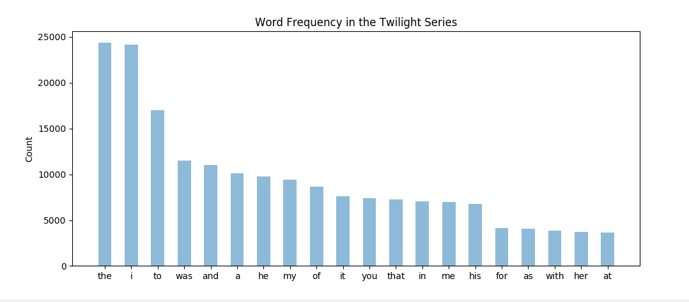
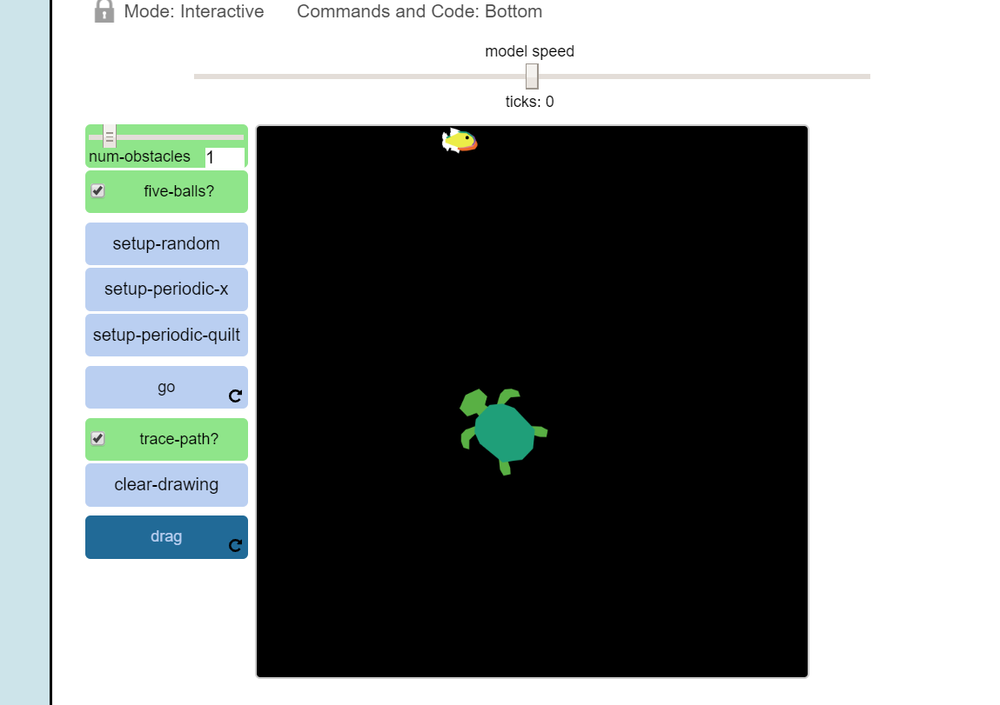

<!doctype html>
	<html lang="en">
	    <!DOCTYPE html>
<html>
<body style="background-color:#D1C1FF;">
</body>
</html>
	  <head>
	    <meta charset="utf-8">
	    <title>Portfolio</title>
	  </head>
	  <body>
    <a href="index.html">Home</a>
    <a href="portfolio.html">Portfolio</a>
     <a href="aboutme.html">About Me</a>
    <h1>Welcome to Ashley's Portfolio Page!</h1>
    
    <br>
    <a target="_blank" href="https://scratch.mit.edu">
      
    </a>
	  </body>
	</html>
	<p></p>
	<h2>Potatoes in Space Game!</h2>
	<p1>Here's a little scratch game I made! Press the green flag to start and restart. For the first level, use your mouse to guide the potato(it will glide to wherever your mouse is). Hope you have fun! </p1>
	<p></p>
	 <iframe allowtransparency="true" width="485" height="402" src="//scratch.mit.edu/projects/embed/286063799/?autostart=false" frameborder="0" allowfullscreen></iframe>
	 <p></p>
	 <h3>MIT App Inventor Maze Game</h3>
	<p2>This is a game I made using MIT App Inventor. It is a maze game where you use arrow controls to move the alien, but don't run into the walls because that will set you back to the beginning. Once you make it to designated color area, you can move to the next level. Once you complete all the levels, you will recieve a congratulatory message. To replay, press the built in back button of the device. </p2>
	<p></p>
	
	
	<p></p>
	<h4>Alex's Study Adventure</h4>
<p></p>
	<p3>This is an interactive fiction program I made using repl.it. You play the role of Alex, a student that has finals tomorrow. Make the right decisions and you will succeed in your finals! Give it a go! Press the green run button to begin the adventure.</p3>
	<iframe height="400px" width="100%" src="https://repl.it/@AshleyHuang1/Interactive-Fiction-Project?lite=true" scrolling="no" frameborder="no" allowtransparency="true" allowfullscreen="true" sandbox="allow-forms allow-pointer-lock allow-popups allow-same-origin allow-scripts allow-modals"></iframe>
	<p></p>
	<h5>Python Trivia Quiz</h5>
<p></p>
	<p4>This is a Python program for a trivia game. There are 3 categories, art, music theory, and language. You can pick which category you would like to play first, and after you finish it, you can select the next level. The art and music theory categories are multiple choice and the language category is free-response. After each question, the game will tell you if you got the question correct, and if you got it incorrect, it will tell you what the correct answer was. It will also tell you your total score.</p4>
	<iframe height="400px" width="100%" src="https://repl.it/@AshleyHuang1/Trivia-Game?lite=true" scrolling="no" frameborder="no" allowtransparency="true" allowfullscreen="true" sandbox="allow-forms allow-pointer-lock allow-popups allow-same-origin allow-scripts allow-modals"></iframe>
	<h>Image Manipulation</h>
<p></p>

	
	
	
	
<p></p>
	<p5>We used Python in Canopy to manipulate images and change things, like colors and size. To change the color of the rose, we selected all pixels above a certain brightness in the area of the rose and changed the color. For some of the images, we also changed the overall color to a different color, like making everything tinted green. </p>
	<h6>Python GUI</h6>
<p></p>
	
	
	<p>Our GUI is 3 bouncing balls and you can adjust how fast they move with the slider. The colors are random, so each time you run the program, all the colors of the balls and background are different. </p>
	<h7>Twilight Word Count Graph</h7>
<p></p>
	
	<p>We used Python on Canopy to create a bar graph that shows what words are used most frequently in the Twilight Series</p>
<p></p>
	<p>Netlogo Chaos in a Box Simulation</p>
	<p>Our simulation is a Chaos in a Box simulation, with the obstacles being a green turtle and the bouncing balls being fish, all differently colored to make it easier to track individual paths. You can adjust the number of turtles in the simulation and see how the paths of the fish change. You can also have 1 or 5 fish. There is also a drag option so if you wish, you can change the size of the turtles and drag them to a desired place. There are also preset patterns of an X or a quilt pattern. Those start off with all the fish going in the same path but soon it turns into chaos in a box.</p>
	
	
							  	

